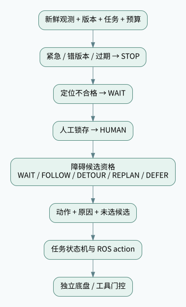

本章目录
第 23 章 可解释行为树
行为树 BT 组织条件与动作，使高优先级状态能够反复检查。它不是自动生成最优策略的算法；可解释性来自明确的条件、优先级、阈值、原因码和输入证据。当前代码把这些一起输出，便于回答“为什么等待、为什么跟随、为什么不再重规划”。

节点状态与组合
节点通常返回 SUCCESS、FAILURE、RUNNING。Sequence 按顺序执行，遇失败或运行中停止继续；Fallback 尝试候选，找到成功或运行中的分支停止。Reactive 组合每次 tick 重新检查前面的条件，适合让新的高优先级风险打断低优先级行为。
这里的 SUCCESS 是树节点的控制流结果，不一定是整项任务完成。当前简单动作节点调用 choose 写出一个决策就返回 SUCCESS，真正长任务由 Python mission 与 ROS action 执行。把两者混淆会误以为 BT 一次 tick 就完成了喷洒。
当前优先级
公共监督树依次检查紧急风险、版本、输入新鲜度、定位、停车储备、人工锁存、反馈完成、已验证替代路径和障碍交互，最后才执行下一义务。即使 complete 为真，紧急条件也优先停车。
人工锁存防止条件短暂恢复后自动启动。reset 需要车停、工具停、导航 idle、输入新鲜且无紧急/版本/定位问题。人工请求不意味着人必须立即接管驾驶；它首先要求停止并清楚说明剩余工作与原因。
WAIT FOLLOW DETOUR REPLAN DEFER 的区别
WAIT 给短期障碍或清除迟滞留观察时间；FOLLOW 仅用于合格同向目标；DETOUR 要有当前验证过的足迹路径与足够预算；REPLAN 对持续阻塞发出新的全局查询；DEFER 在存在其它义务时保留原残余并改做别项。
持续时间、尝试次数和剩余预算限制恢复。达到界限进入 HUMAN。原因字段明确写着没有全局无路证明：本次有限搜索未得到合格路径，与“绝对不存在路径”是不同结论。
固定生产代码逐段阅读
下面是固定提交中的原样节选。完整文件有离线行号页；片段可能省略上下文，不能单独当成可运行脚本。读完每段后，回到调用者确认它在当前任务中如何使用。
common.xml 第 1 至 27 行
离线带行号源码 · 固定 Git 提交
<root BTCPP_format="4" main_tree_to_execute="CommonSupervisor">
<BehaviorTree ID="CommonSupervisor">
<ReactiveFallback name="EvidencePrioritySupervisor">
<Sequence name="ImmediateSafety"><Emergency/><EmergencyStop/></Sequence>
<Sequence name="VersionContract"><WrongVersion/><VersionStop/></Sequence>
<Sequence name="ObservationFreshness"><InputStale/><StaleStop/></Sequence>
<Sequence name="LocalizationAdmission"><LocalizationMissing/><LocalizationWait/></Sequence>
<Sequence name="ParkingReserve"><BudgetLow/><BudgetStop/></Sequence>
<Sequence name="HumanInterventionLatch"><ManualHold/><ReportLatched/></Sequence>
<Sequence name="FeedbackCompletion"><CompleteFeedback/><Complete/></Sequence>
<Sequence name="ObservedReplannedMotion"><ActiveObservedPatch/><ExecuteObservedPatch/></Sequence>
<Sequence name="ObstacleInteraction">
<Blocked/>
<ReactiveFallback name="BoundedObstacleOptions">
<Sequence name="BoundedRetryLimit"><BlockExhausted/><ReportBlocked/></Sequence>
<Sequence name="SameDirectionLeader"><LeaderSuitable/><FollowLeader/></Sequence>
<Sequence name="WaitAndHysteresis"><ShortWait/><WaitClear/></Sequence>
<Sequence name="CertifiedLocalAlternative"><ValidDetour/><UseDetour/></Sequence>
<Sequence name="PersistentGlobalReplan"><CanReplan/><Replan/></Sequence>
<Sequence name="OtherObligation"><CanDefer/><Defer/></Sequence>
<WaitBounded/>
</ReactiveFallback>
</Sequence>
<Execute name="TaskSpecificDispatcher"/>
</ReactiveFallback>
</BehaviorTree>
</root>
XML 的顺序就是优先级，ReactiveFallback 每次重新检查高优先级条件。末尾 Execute 只是写出任务选择，长动作由 mission 执行。节点 SUCCESS 不等于整个工作区完成。
policy.hpp 第 18 至 49 行
离线带行号源码 · 固定 Git 提交
void prepare(J context,double t){
e=std::move(context);e["t"]=t;
if(fresh()){
if(yes("blocked")){if(blocked_since<0)blocked_since=t;clear_since=-1;}
else {if(clear_since<0)clear_since=t;if(t-clear_since>=cfg.at("clear_hold_s").get<double>())blocked_since=-1;}
if(leader())blocked_since=t; // Following is progress, not a persistent stationary obstruction.
if(yes("commanded_motion")&&yes("localized")&&(!yes("blocked")||leader())){
if(progress_since<0||num("progress_m")-last_progress>=cfg.at("progress_delta_m").get<double>()){progress_since=t;last_progress=num("progress_m");}
if(t-progress_since>=cfg.at("progress_timeout_s").get<double>()){manual=true;manual_reason="MOTION_WITHOUT_OBSERVED_PROGRESS";}
}else progress_since=-1;
}
d=J::object();
}
bool emergency()const{return yes("unsafe")||num("risk",0)>=1.||yes("collision");}
bool version_bad()const{return !yes("bindings_valid");}
bool localized_bad()const{return !yes("localized")||!yes("sensors_healthy");}
bool budget_bad()const{return num("remaining_s")<=cfg.at("stop_reserve_s").get<double>()+num("next_min_s");}
bool blocked()const{return yes("blocked")||blocked_since>=0;}
bool leader()const{return yes("blocked")&&yes("leader_on_path")&&yes("leader_same_direction")&&num("leader_confidence")>=.75&&num("leader_speed")>.05&&num("clearance_m")>=cfg.at("follow_min_gap_m").get<double>()&&num("ttc_s",0)>=cfg.at("follow_min_ttc_s").get<double>()&&yes("path_valid");}
bool short_wait()const{return duration()<cfg.at("short_wait_s").get<double>()||(!yes("blocked")&&blocked_since>=0);}
bool detour()const{return yes("detour_valid")&&num("detour_s",1e6)+cfg.at("stop_reserve_s").get<double>()<num("remaining_s")&&num("detour_s",1e6)<cfg.at("persistent_block_s").get<double>()-duration();}
bool replan()const{return duration()>=cfg.at("persistent_block_s").get<double>()&&num("replans")<cfg.at("max_replans").get<int>()&&num("remaining_s")>num("replan_s",10)+cfg.at("stop_reserve_s").get<double>();}
bool defer()const{return duration()>=cfg.at("persistent_block_s").get<double>()&&yes("alternative")&&num("deferrals")<cfg.at("max_deferrals").get<int>();}
bool exhausted()const{if(leader())return false;return duration()>=cfg.at("max_block_s").get<double>()||(duration()>=cfg.at("persistent_block_s").get<double>()&&!replan()&&!defer());}
void choose(const std::string&action,const std::string&reason){
double cap=cfg.at("speed_cap_mps");
if(action=="FOLLOW")cap=std::max(0.,std::min(cap,num("leader_speed")+.35*(num("clearance_m")-cfg.at("follow_target_gap_m").get<double>())));
if(action=="HUMAN"){manual=true;manual_reason=reason;}
J alternatives=J::array({{{"action","WAIT"},{"eligible",!exhausted()},{"reason","bounded observation wait with clear hysteresis"}},{{"action","FOLLOW"},{"eligible",leader()},{"reason","same-direction tracked leader, clearance and TTC bounds"}},{{"action","DETOUR"},{"eligible",detour()},{"reason","only a validated live footprint path with sufficient budget"}},{{"action","REPLAN"},{"eligible",replan()},{"reason","persistent blockage and remaining planner attempts"}},{{"action","DEFER"},{"eligible",defer()},{"reason","another obligation exists; retain residual and original denominator"}}});
for(auto& c:alternatives)c["selected"]=c["action"]==action;
d={{"t",num("t")},{"action",action},{"reason_code",reason},{"speed_cap_mps",cap},{"blocked_duration_s",duration()},{"manual_latched",manual},{"evidence",e},{"thresholds",cfg},{"alternatives",alternatives},{"infeasibility_claim","No global no-path proof; bounded search results only"},{"work_credit",false}};
}
prepare 维护阻塞和进展时间，leader/detour/replan/defer/exhausted 分别判断资格。choose 同时保存证据、阈值和所有候选资格，使日志能解释没有选中的原因。
一个完整推理例子
假设定位有效、输入新鲜、剩余预算足够，路径上出现横穿目标。因为不同向，leader 不合格；阻塞刚开始，ShortWait 合格，所以 WAIT。几秒后若仍占用，且有已验证绕行且代价比继续等更有利，则 DETOUR；没有绕行时，达到持续门限且仍有次数/预算则 REPLAN；次数耗尽且没有可延期义务时 HUMAN。
这段说明是根据实际判据推演，不是宣称新增仿真全部观察到。现场应核对 decision 的 evidence、thresholds、alternatives 与 reason_code，确认哪个候选不合格。
进展监督的细节
仅发出非零命令不算进展，需要观测到沿任务的有效移动。代码在 commanded_motion、localized 且没有静态阻塞或属于合格跟随时计时，超时没有达到进展尺度就锁存 MOTION_WITHOUT_OBSERVED_PROGRESS。
跟随前车本身也是持续进展，不能把它一直算作静态阻塞而最终错误请求人工。反过来，前车停下后也不能永久享受 FOLLOW 特例，目标速度与新鲜度必须持续满足。
C++ 注册与 XML
BehaviorTreeFactory 将字符串名称注册成条件或动作。XML 决定组合顺序，C++ 函数决定判据。改 XML 优先级会改变行为，即使所有条件函数原样保留；改函数阈值也会改变同一棵树的含义，因此两者都属于版本绑定。
JSON 的 num()、yes() 帮助拒绝错误类型和非有限值，默认值应保守。缺字段不能默认“安全”。不过只依赖默认值也可能掩盖上游 schema 错误，所以日志还要保留完整拒绝上下文。
练习与答案
执行 python3 examples/l02/labs.py 23。同一个 complete=True，在 unsafe=True 时返回 STOP，localized=False 时 WAIT。它只演示优先级，不复制完整生产树。
本章练习核心代码与实际输出
完整教学脚本 · 本章完整输出
代码只使用 Python 标准库；合成输入与历史记录在输出 kind 中区分。公共 ROOT、read、wrap、connected 等辅助函数在完整脚本中定义。
def lab23():
"""Priority ordering illustration, not a replacement for BehaviorTree.CPP."""
def decide(e):
if e['unsafe']:return 'STOP'
if not e['fresh']:return 'STOP'
if not e['localized']:return 'WAIT'
if e['manual']:return 'HUMAN'
if e['complete']:return 'COMPLETE'
return 'EXECUTE'
normal=dict(unsafe=False,fresh=True,localized=True,manual=False,complete=True)
unsafe={**normal,'unsafe':True};unlocalized={**normal,'localized':False}
assert decide(unsafe)=='STOP' and decide(unlocalized)=='WAIT'
return dict(complete=decide(normal),complete_but_unsafe=decide(unsafe),
complete_but_unlocalized=decide(unlocalized))
{
"chapter": "23",
"passed": true,
"result": {
"complete": "COMPLETE",
"complete_but_unsafe": "STOP",
"complete_but_unlocalized": "WAIT"
}
}
本章例子可以在 Windows 使用 py -3 或在 Linux 使用 python3 重跑。它验证局部概念或读取历史证据，不对机器人全任务提供新通过结论。
问：BT 越深是否越高级？答：可解释性取决于责任、条件和证据，不取决于节点数量。问：为何要输出未选候选？答：它能区分“没有路径候选”“路径非法”“预算不足”，避免所有情况都只显示 replanning failed。
常见故障：WAIT/EXECUTE 抖动查迟滞与数据年龄；人工锁存莫名解除查 reset 条件；无限重规划查计数和预算；工具已开始却未响应 WAIT 查任务状态机，不只改 BT。
练习：给一次真实决策写三句话：触发输入是什么、选中分支为什么合格、最接近的另一个候选为什么不合格。不能只复述原因码名称。